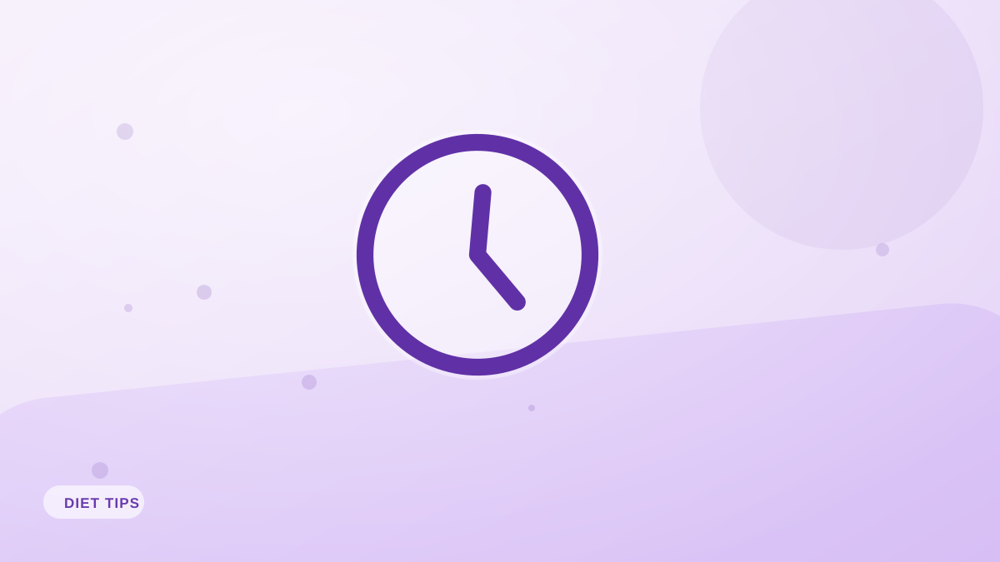

¿Cenar tarde engorda? Lo que de verdad importa del horario de las comidas
¿Cenar tarde engorda? ¿Hace falta desayunar? Esto es lo que dice la evidencia sobre horarios y frecuencia de comidas, y lo que de verdad importa.

Los consejos sobre horarios están por todas partes y a menudo se contradicen. No comas tarde. Haz seis comidas pequeñas. Nunca te saltes el desayuno. Es tentador pensar que el reloj guarda el secreto de la pérdida de peso. Casi nunca es así, aunque hay algunos matices genuinamente útiles.
Las calorías totales siguen mandando
La verdad de fondo: tu peso lo determinan las calorías totales a lo largo del tiempo, no la hora del reloj. Una caloría comida a las nueve de la noche no engorda más por naturaleza que una comida a mediodía. Si el total diario encaja en tu déficit, el horario es secundario. (La calculadora de déficit calórico da ese total.)
El mito de comer tarde
Comer tarde no almacena más grasa por el reloj, o no mucha: algunos estudios controlados pequeños apuntan a que comer tarde puede subir un poco el hambre y bajar un poco el gasto energético, pero las calorías totales siguen decidiendo el resultado. Lo que sí está claro es que comer de noche suele ser comida extra y no planificada —picoteo encima de las comidas del día—, y esas calorías de más son lo que más importa. La cena tardía de siempre, un sándwich mixto o un bocadillo según nuestra tabla por ración, son 400–500 kcal que no estaban en el plan.
¿Hace falta desayunar?
No necesariamente. El desayuno ayuda a quien se queda con mucha hambre o come de más después si no lo toma. Pero si por la mañana no tienes hambre y comes bien el resto del día, saltártelo está perfectamente bien (el ayuno intermitente es en gran parte eso, convertido en horario). Aquí gana la preferencia personal.
Dónde sí ayuda el horario
- Control del apetito: espaciar las comidas para no llegar con un hambre extrema reduce los excesos.
- Entrenamiento: algo de proteína y carbohidratos alrededor del ejercicio puede favorecer el rendimiento, aunque la ventana dura horas.
- Sueño y digestión: a algunas personas, una cena muy copiosa justo antes de dormir les altera el descanso.
La conclusión
Come con un horario que controle tu hambre y encaje en tu vida: ese es el beneficio real de la planificación horaria. Más allá de eso, céntrate en las calorías totales y la proteína.
Ideas clave
- Las calorías diarias totales importan mucho más que el horario.
- Comer tarde importa sobre todo por las calorías de más que suele traer; el reloj en sí es, como mucho, un factor pequeño.
- El desayuno es opcional: guíate por el hambre y la preferencia.
- Organiza las comidas para controlar el apetito y apoyar el entrenamiento.
Preguntas que hace la gente
¿Cenar tarde engorda?
No por el reloj. Lo que decide el peso es el total del día. Algunos estudios pequeños apuntan a algo más de hambre y algo menos de gasto cuando se come muy tarde, pero el efecto grande es otro: la cena tardía suele ser comida extra que no estaba en el plan.
¿A qué hora es mejor cenar?
A la que te deje dormir bien y no te haga llegar con un hambre extrema. A quien una cena copiosa le altera el sueño, cenar dos o tres horas antes de acostarse le funciona; a quien no, le da igual.
¿Saltarse el desayuno adelgaza?
Ni adelgaza ni engorda por sí mismo. Sirve si por la mañana no tienes hambre y no te lleva a comer de más después; perjudica a quien llega voraz a media mañana. Es preferencia, no regla.
Este artículo es información general, no consejo médico.
Herramientas: calorías diarias · déficit calórico · macros · IMC · calorías de platos españoles